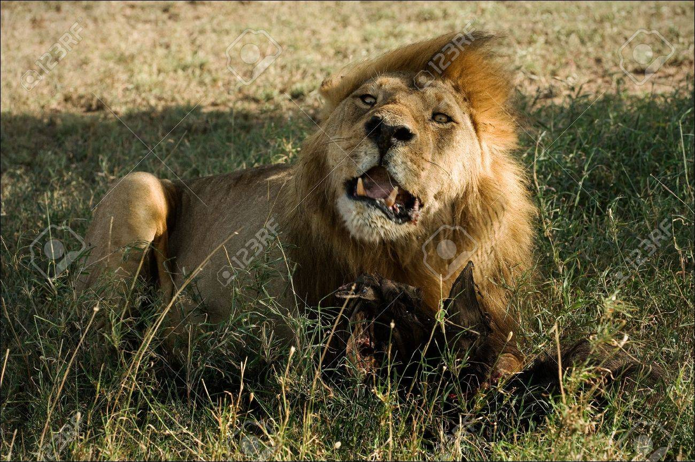
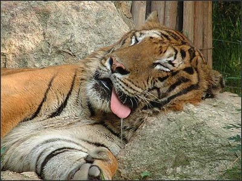

사자

용맹한 이미지와 달리 수컷 사자는 하루의 20시간을 그늘에서 쉬며 보낸다.이 때문에 게으른 이미지가 강하지만, 이는 재생산 효율의 문제이며 본래 사냥 실력은 뛰어나다 한다. 사실 사냥을 암사자들에게만 맡기는 수사자는 전체 성체 수사자 중에 일부에 불과하다. 대다수의 수사자는 떠돌이 수사자들인데 이들은 생존하기 위해 사냥을 직접 한다.실제로, 수사자의 경우 자기보다 체중이 4배나 나가는 성체 물소를 사냥하기도 하며, 1톤이 훨씬 넘는 성체 하마를 두 수사자가 협공하여 사냥한 경우도 있다. 물론 수사자라고 해도, 정면 대결이 아닌 기습으로 공격하는 것이다.
정확히 말해, 수사자가 사냥을 안 하는 이유는 일단 사자는 낮이 아닌 밤에 본격적으로 활동을 개시하기 때문에 힘을 아끼기 위해서도 있지만 무엇보다 아프리카의 거친 자연에서는 바로 새끼의 생존이 가장 중요한 목적 중 하나인데, 여타 다른 고양이과 동물과는 달리 거의 유일하게 무리를 짓는 사자는 초식동물들처럼 새끼를 항상 이끌고 다닐 수도 없고 누군가는 새끼들을 지켜야 하기 때문이다. 그리고 이러한 새끼를 공격하는 동물은 다른 육식동물들이다. 무리에 속하지 않은 수사자들도 새끼를 죽이는데 자신의 새끼를 임신시키기 위해서이다. 암사자들도 자신의 새끼를 지킨다고 저항하지만 수사자와 암사자는 체급차가 워낙 커서 한계가 있다. 이런 동물들에게서 새끼를 지키기 위해 사냥에 직접 나서서 힘을 소비하는 것을 자제하는 것이다. 그래선지 암컷들이 사냥을 해오면 가장 먼저 영양을 섭취한다. 불필요한 싸움을 피할 수 있기 때문에 이럴 때는 자신의 모습을 과시하는 갈기가 큰 도움이 된다.
span 태그는 일부분의 문자 텍스트를 묶어주기 위한 태그
인라인 요소로 필요한 만큼만 차지하고 줄이 바뀌지 않는다.
가로 세로 크기를 조절할 수 없다.
style에서 dispaly : inline-block 속성을 설정하면
가로 세로 크기를 조절할 수 있다.
호랑이

"호랑이"의 어원에는 여러 설이 있으나 범을 뜻하는 虎와 이리를 뜻하는 狼에 접미사가 붙어(虎+狼+이) 육식 맹수를 가리키던 것이 점차 범 대신 호랑이라고 부르게 된 것으로 본다. 불교 용어로는 대충(大蟲)[5]이라고 부른다. 중국 소설 수호지에는 '모대충(母大蟲)'이란 별명을 가진 고대수라는 여자 호걸이 등장하는데, 모대충이란 말도 '암호랑이'라는 뜻. 같은 작품에 등장하는 설영 역시 별명이 병대충(病大蟲 - 호랑이만큼이나 용맹한 자)이다.
이 중 시베리아호랑이는 카스피호랑이와 유전적으로 매우 밀접한 것으로 확인되어 서아시아의 호랑이 개체군이 동아시아로 이동하여 정착한 개체군으로 여겨지나, 그 시점이 약 1만여년 전으로 추정되는 동시에 중앙아시아의 호랑이가 멸종하여 두 아종이 완전히 분리된 것이 불과 200년 미만으로 파악되므로 시베리아호랑이가 별개의 아종으로 분화할 정도의 시간이 있었다고 보기 어렵기 때문에 시베리아호랑이를 카스피호랑이와 동일한 아종으로 파악할 수 있다고 결론짓고 있다.
호랑이 중 가장 북방 지역에 서식한다는 특성 상 시베리아호랑이는 겨울에는 겨울털이 길게 자라고 배와 옆구리에 두터운 지방층이 있어 배 부분이 늘어져 보이며, 타 호랑이 아종들에 비해 줄무늬와 털빛이 다소 옅고 털에서 흰 부분이 차지하는 비중이 큰 동시에 줄무늬의 간격이 넓고 형태가 비교적 단조로워 보이는 것 등이 시베리아호랑이가 다른 호랑이 아종들과 구분되는 외형적인 특징이다. 한국동물원80년사 등 과거에 저술된 서적에서는 꼬리에 있는 고리 모양 무늬의 숫자가 시베리아호랑이는 8~9개, 남방계 호랑이는 10~13개로 구분된다고 서술하기도 했으나[8] 현재에는 잘 사용되지 않고 있는 방법이다.